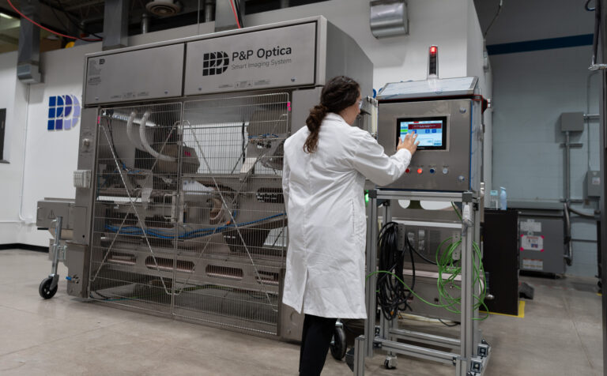

P&P Optica is a company that focuses on foreign material detection through the spectrometer lenses they specialize in, all through the work of their own AI model and program. Their home headquarters is in Waterloo, and have been doing successful work since 1995. Their roots are in optics research which then evolved to foreign material detection on factory lines.
I’ve been placed in the Data Services team, arguably one of the most vital teams for their entire program. As we know, a model is only as good as the data given to it. That’s where I come in. I get to see the model’s bare bones, refine the data, and feed it into our model. Refine, refine, refine. This process of continuous filtering and controlled scenarios allows for the model to progress in its detection mechanisms. I needed to be attentive to fine details and perfect simulations—even creating a demo instance for clients to see the proficiency of our program.

Goal 1: Develop a comprehensive understanding of the software process and its impact on data services
Objective: Be able to explain the software process and how it correlates to the data side of our work.
I successfully engaged with the majority of the software team and reviewed key segments of code to reinforce my understanding. I was able to explain my insights to coworkers without losing them in complex explanations. This showed that my understanding was both accurate and communicable, bridging the gap between teams.
This experience has given me a strong foundation in understanding how my role within data services contributes to the larger software process. I feel more confident in my ability to represent our data team’s work within the broader picture of PPO, and I now see the value of cross-functional communication in supporting our overall mission.
Goal 2: Gain first-hand experience of the client-side data collection process
Objective: Explore the client-facing end of data collection to better understand the end-user impact of our work.
I was able to contribute to a live product demo for a potential client, but I have yet to be on field in an external factory. Success for this goal will mean I have accompanied the client services team on a field visit, observed the data collection process, and contributed to at least one live client interaction. After each visit, I’ll debrief with the client services team to clarify any questions and refine my understanding. By experiencing the client-facing side of our work, I’d gain a deeper appreciation of how end-user interactions influence our data workflows. I anticipate that this exposure will improve my ability to align data solutions with real-world client needs and enhance the quality of insights I can offer back to the team.
Goal 3: Step Outside My Comfort Zone by Taking on New and Unfamiliar Tasks
Objective: Broaden my skill set by engaging in tasks that are outside my usual scope, pushing myself to grow in unexpected ways.
I will consider this goal achieved if I have successfully completed at least two tasks or projects outside my scope of familiarity. In specific this was annotating training data and being the runner for our trays that feed the model. Feedback from mentors or colleagues will help me gauge how well I’ve adapted to these new challenges, and I’ll document my learnings along the way to track progress.
Embracing unfamiliar tasks has encouraged me to become more adaptable and resilient, while building a wider skill set. This has not only contributed to my personal growth but has also prepared me to take on future roles with confidence and versatility.
Throughout this internship, I learned lots about myself and the field I’m in. I wanted to be able to integrate myself quickly, gain experience on the middle ground between team and client, as well as pushing myself to do things that maybe aren’t familiar to me. All of these goals had been accomplished to varying degrees. This experience has given me a strong foundation in understanding how my role within data services contributes to the larger software process. I feel more confident in my ability to represent our data team’s work within the broader picture of PPO, and I now see the value of cross-functional communication in supporting our overall mission.